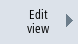
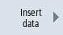

Depending on the row you have selected, you can use the "Properties" softkey to change comments and, in the case of machine data, the data source (channel, axis, drive unit) and view the description and, if required, change.
-
Machine data
Depending on the data type you can select either a fixed or a variable data source for machine data.
The entry "variable(*)" means that when you can select another data source (channel, axis, drive unit) with vertical softkeys 1- 3 (+, - and direct selection) the value displayed changes to refer to the data source currently selected.
Alternately, you can select a fixed data source so that the displayed value does not change when you select a different data source.
-
Comment texts
Text and description
Procedure
  | 1. | Select the "Start-up" operating area and press the "Mach. data" softkey. |
| | 2. | Press the "User views" softkey. The "User Views" window opens. |
|  | 3. | Press the "Edit view" softkey. Additional softkeys to edit the user view are listed. |
|  | 4. | Press the "Insert data" softkey if you wish to enter another data item. |
  | 5. | Select a machine data item with the cursor keys. |
| | 6. | Press the "Up" or "Down" softkeys to move the selected row. |
| | | - OR - |
| | | Press the "Delete line" softkey to remove the selected line from the view. The data item is removed without a prompt. |
| | | - OR - |
| | | Press the "Properties" softkey to view the texts for comments and, if required, change. The "Properties" window is opened. For machine data, depending on the setting, the description or the machine data is displayed in the lower left-hand window. |
 | 7. | Press the "Back" softkey to save your changes. |
Selecting a particular machine data item
 | | You can use the Search dialog box to look for a particular data item. |
 | | Press the "Go to start" softkey to start the search at the first entry. |
 | | Press the "Go to end" softkey to start the search at the last entry. |
| | | Press the "Continue search" softkey if the data found during the search does not match up with what you are looking for. |